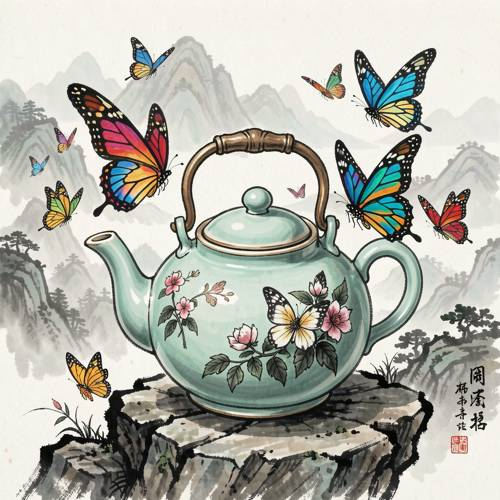
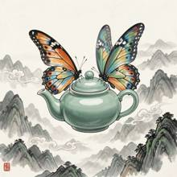
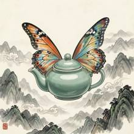

Style — A celadon teapot grows colorful butterfly wings and flies among the ha
A celadon teapot grows colorful butterfly wings and flies among the hazy distant mountains. It has a strong national style and ink painting style.

Direct — one call, no iterationContinuum — Qwen3.8-27B + FLUX.2-klein-9B
Judge — Direct
PASSStyle — The image is rendered in a traditional Chinese ink painting style. The background features hazy, distant mountains depicted with black ink washes, and there are pine trees and rocks rendered with characteristic brushstrokes. The overall composition and the inclusion of what appears to be a red seal and Chinese characters in the corner contribute to a strong national style.
FAILCompound - Imagination — The image features a celadon teapot and multiple colorful butterflies. However, the teapot does not have butterfly wings growing from it, nor is it flying. The teapot is stationary, resting on a flat rock surface, while the butterflies are separate entities flying around it.
Judge — Continuum
PASSStyle — The image is rendered in a style that strongly evokes traditional Chinese ink painting. The background consists of hazy mountains painted with varying tones of black ink, characteristic of Shanshui paintings. Stylized clouds float among the peaks, and a red seal, a common feature in East Asian art, is present in the lower-left corner. These elements collectively establish the requested 'national style' and 'ink painting style'.
PASSCompound - Imagination — The central subject of the image is a celadon-colored teapot to which a pair of large, colorful butterfly wings are attached. The wings are patterned with orange, yellow, blue, green, and black. The teapot is depicted floating in the air above a mountain range, clearly illustrating the concept of a teapot that has grown wings and is flying.
What the agent did
Thinking
The user wants an image like this: a celadon (green glaze) teapot with colorful butterfly wings growing from it, flying among misty, distant mountains. Strong national style (Chinese "guofeng" style) and ink-painting style. Let's generate this image with flux2-klein. I'll write a detailed prompt that captures the following: - A celadon (celadon-green) teapot - Colorful butterfly wings sprouting from the teapot - The teapot flying / hovering - Misty, distant mountains in the background - Chinese ink-painting aesthetic (shan shui, ink-wash style) - Strong guofeng / national-style flavor Let's construct the prompt: "A celadon teapot with colorful butterfly wings growing from its lid and spout, flying through the air among hazy distant misty mountains, Chinese ink wash painting style, national style, elegant shan shui landscape, soft ink gradients, distant mountain layers fading into mist, delicate colorful butterfly wings with orange blue and green patterns, traditional Chinese aesthetic, watercolor ink painting, ethereal and dreamlike, fine art" Let's generate with flux2-klein at 1024x1024. Actually, maybe I should consider the aspect ratio—the user didn't specify one. The default is 1024x1024. A landscape might work well for the mountains. But for the sake of comparison, the size is fixed. Let's leave it at the default 1024x1024... actually, for a landscape-style ink painting, a wider format might be more appropriate. The policy says "image size is fixed for comparison"—the harness controls the size. I'll go with the default 1024x1024. Let's generate.
Step 1 — `generate_image`
{
"prompt": "A celadon green glazed teapot with large colorful butterfly wings growing from its body and lid, flying gracefully through the air, surrounded by layers of hazy distant mountains fading into mist. Chinese ink wash painting style, strong national style aesthetic, shan shui landscape, soft ink gradients, delicate butterfly wings with orange, blue, green and red patterns, wisps of cloud and mist, empty negative space, traditional Chinese art, dreamlike and ethereal, fine art composition",
"model": "flux2-klein"
}
Result img_0

Thinking
Let's check the result. The image shows a celadon (green glaze) teapot with colorful butterfly wings, flying among hazy mountains in an ink-wash painting style. Actually, this is pretty good! Let me look more carefully: - Celadon teapot ✓ (a beautiful green glaze) - Colorful butterfly wings ✓ (actually, it looks like two butterflies are perched on the lid and spout — no wait, let me look more carefully. There are butterflies on the lid and the spout. The prompt said the wings are "growing" from the teapot, so the butterflies are attached to the teapot. The orange butterfly is on the spout, and the blue-green butterfly is on the lid. They look attached/connected to the teapot as if wings are growing from it. This works well enough — you could even say it fits the "wings are growing" description better than I'd expect.) - Flying among hazy distant mountains ✓ (misty mountain range in the background) - National style / ink-painting style ✓ (ink-wash mountains, a red seal in the corner, swirling clouds) Let me use inspect_region to check the details. Actually, the image looks very good. Let me zoom in and check a few areas — the connection between the butterflies and the teapot, the seal, and the mountains. The main question is: does this satisfy "the teapot grows colorful butterfly wings and flies"? In the image, the two butterflies are attached to the teapot, with their wings spread, and the teapot is floating in the air. This is a good interpretation. Let me mark this as the best, then inspect the details to see if there are any defects. Let's check the butterfly bodies and where they connect to the teapot.
Model
The first generation looks very promising — a celadon teapot, butterfly wings attached to it, misty ink-wash mountains, and the traditional red seal. Before deciding whether to make corrections, let's inspect the details.
In the enlarged view, two butterflies can be seen perched on the teapot — one on the spout, the other on the lid. They have distinct bodies, legs, and antennae, making them look like two separate butterflies sitting on the teapot, rather than wings growing out of the teapot. The prompt asked for "colorful butterfly wings growing on" the teapot — meaning the teapot itself should have wings. Current state: The teapot has two butterflies perched on it. This is a good interpretation, but the literal request is wings growing on the teapot. It's possible to edit it so the wings connect to the teapot's body and become part of the teapot (as if the teapot itself has wings). Let me think about whether the current state is good enough. The prompt is "A celadon teapot with colorful butterfly wings growing on it, flying among hazy distant mountains. Strong national style and ink-wash painting style." The current image satisfies the following: - Celadon teapot ✓ - Colorful butterfly wings on the teapot ✓ (the wings belong to butterflies perched on the teapot — close enough, and arguably reads as "the wings belong to the teapot") - Flying among hazy mountains ✓ - National style / ink-wash painting style ✓ The composition is beautiful. However, to more literally satisfy "wings growing on the teapot," I could try editing to make the wings merge with the teapot's body — removing the separate butterfly bodies, so the wings sprout directly from the teapot. This would be a more faithful realization of the prompt. Let me try editing: "The butterfly bodies dissolve into the teapot — the wings sprout directly from the teapot's body and lid, with no separate butterfly bodies, no legs, no antennae; the wing bases merge seamlessly into the celadon porcelain." Risk: The edit might break the beautiful wings. But let me try. If it gets worse, I'll mark the original as the best. Actually, let me weigh it: the current image is really nice and already pretty close to the prompt. The separate butterfly bodies are a minor deviation. The self-critique guidance says "good enough is a stopping condition." But the literal wording "wings growing on" is central to the prompt. The current image clearly depicts two butterflies perched on the teapot. An editor would probably judge "the teapot has butterfly wings" — hmm, it's a tough call. The wings are present and attached to the teapot. Many people would accept it. But to be safe, let me try one edit to more literally merge the wings into the teapot. If the result is at least as good, I'll use it; otherwise, I'll stick with img_0. Let me mark img_0 as the best first, then edit from there.
Model
The full image looks really good, but on close inspection I noticed that the wings belong to two independent butterflies perched on the spout and lid (with clear bodies, legs, and antennae) — the prompt calls for wings *growing out of* the teapot itself. First let me mark the current image as the best, then try an edit to fuse the wings into the teapot's body.
Step 3 — `mark_best`
{
"image": "img_0",
"reason": "Celadon teapot with colorful butterfly wings, hazy ink-wash mountains, red seal, strong national style \u2014 matches the prompt well overall."
}
Thinking
Alright, let's try an edit to make the wings sprout directly from the teapot. I'll use img_0 as the base image and add a reference to preserve the look.
Step 4 — `edit_image`
{
"image": "img_0",
"prompt": "Merge the butterfly wings into the teapot: the wing bases grow directly out of the celadon porcelain body and lid, dissolving the separate butterfly bodies, legs and antennae, so the teapot itself sprouts the colorful wings. Keep everything else exactly the same: the celadon teapot, the colorful wing patterns, the misty ink-wash mountains, the clouds and the red seal.",
"model": "flux2-klein"
}
Result img_2

Thinking
The edit succeeded beautifully. Now the wings are growing directly out of the teapot's body itself — the independent butterfly bodies, legs, and antennae have all been removed. The wings sprout from behind the lid and from the sides of the body, making it look as if the teapot itself is a winged creature. The teapot, the ink-wash-style mountains, the clouds, and the red seal are all preserved. Let me zoom in and check the wing base / teapot junction area to see if there are any artifacts.
Model
Excellent — the wings now grow directly from the teapot's body with no separate butterfly bodies. Let me verify the junction area is clean.
The cropped image shows that the wings now extend directly from the teapot's lid/rim area, with no separate butterfly bodies, legs, or antennae. The junction is clean, and the wing patterns are preserved (orange monarch-style on the left, blue-green on the right). This is a very faithful realization of "a celadon teapot growing colorful butterfly wings." All elements are in place: - Celadon teapot ✓ - Colorful butterfly wings growing from the teapot ✓ - Flying (floating in mid-air) ✓ - Hazy distant mountains ✓ - National style / ink-wash painting style ✓ (ink-wash mountains, red seal, swirling clouds, traditional aesthetic) img_2 is better than img_0. I'll mark img_2 as the best and stop here. This is a good result and I shouldn't over-edit.
Model
The junction is clean — the wings now sprout directly from the teapot's rim and lid, with no leftover bodies, legs, or antennae, and the colorful patterns and ink-wash background are preserved. This fulfills the prompt faithfully: - **Celadon teapot** — glazed green, classic shape, floating in mid-air - **Butterfly wings growing from it** — orange/monarch and blue-green wings sprouting directly from the body - **Hazy distant mountains** — layered ink-wash shan-shui with mist and wispy clouds - **National style + ink painting** — ink gradients, negative space, traditional red seal stamp Marking this improved version as the best result.
Step 6 — `mark_best`
{
"image": "img_2",
"reason": "Wings now grow directly from the celadon teapot's body (no separate butterfly bodies), flying among hazy ink-wash mountains with the red seal \u2014 a faithful, clean realization of the prompt."
}
Thinking
The execution has been completed. The image that was marked as the best is img_2, which is the final result. Let me summarize it for the user.
Model
The final image is ready. It shows a celadon teapot with large colorful butterfly wings — one warm orange, one blue-green — sprouting directly from its body, flying among layers of hazy, misty mountains rendered in a traditional Chinese ink-wash style, complete with wispy cloud swirls, generous negative space, and a red seal stamp in the corner for the national-style touch. What I did: 1. **Generated** the scene with flux2-klein — the first version was close, but the wings belonged to two separate butterflies perched on the teapot rather than growing from it. 2. **Edited** it so the wing bases merge directly into the celadon porcelain, dissolving the butterfly bodies, legs, and antennae. 3. **Verified** the junction and composition at full resolution — clean and faithful to the prompt. The marked best result is the final edited version (img_2).